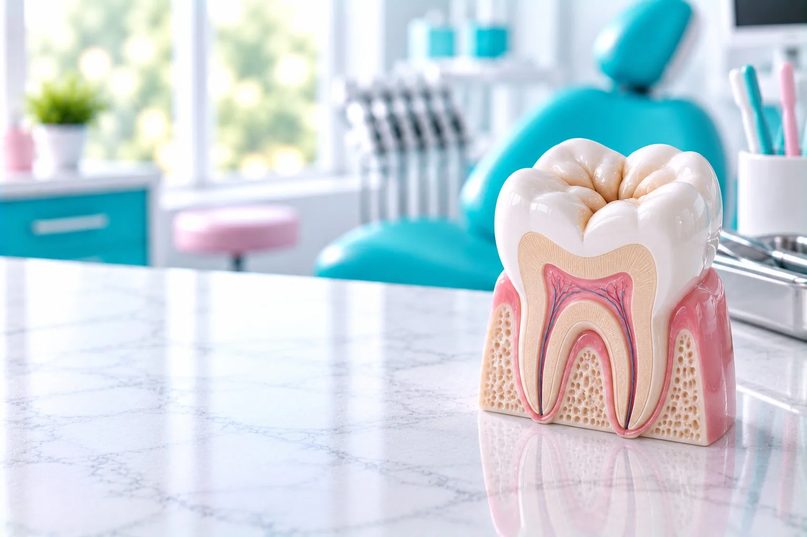
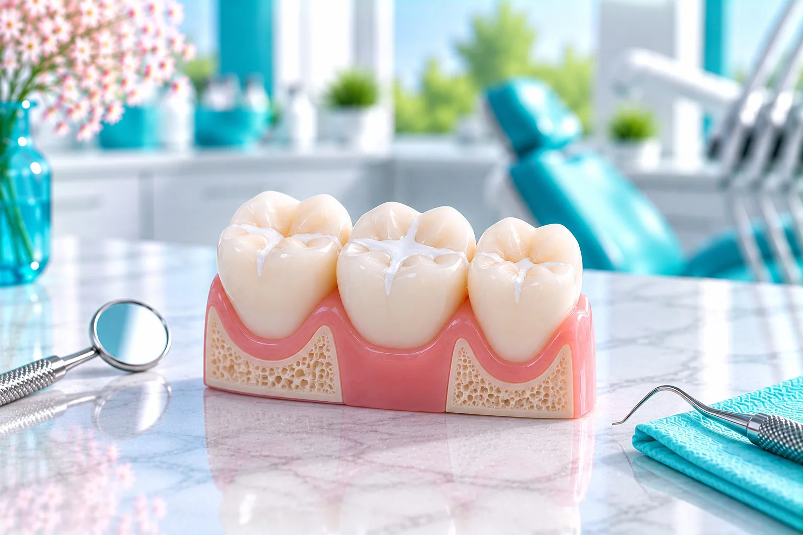
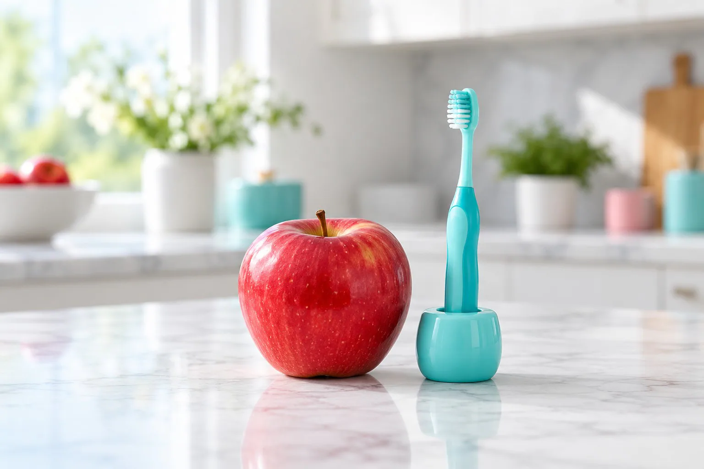

Новые жевательные зубы
Жевательные зубы, которые прорезались недавно.

Герметизация фиссур в стоматологии «Вайтис» в Одинцово стоит 3 200 ₽.
Бороздки жевательных зубов закрывают герметиком, чтобы в них не задерживался налёт. Процедуру проводит детский стоматолог. Клиника на ул. Северная, 5 к4 (ЖК «Одинбург»), приём ежедневно с 9:00 до 21:00.
Имеются противопоказания. Необходима консультация специалиста.
Герметизация фиссур: цена 3 200 ₽. Если перед процедурой нужна чистка, детская гигиена стоит от 3 500 ₽.
Скидка 5% многодетным семьям и пенсионерам. Лечение можно оплатить частями, условия подскажет администратор. Выдаём документы для налогового вычета 13%.
Имеются противопоказания. Необходима консультация специалиста.
Герметизация фиссур: цена 3 200 ₽. Если перед процедурой нужна чистка, детская гигиена стоит от 3 500 ₽.
| Услуга | Когда нужна | Цена |
|---|---|---|
| Герметизация фиссур | закрытие бороздок герметиком | 3 200 ₽ |
| Детская профгигиена | чистка перед герметизацией, если нужна | от 3 500 ₽ |
Скидка 5% многодетным семьям и пенсионерам. Лечение можно оплатить частями, условия подскажет администратор. Выдаём документы для налогового вычета 13%.
Имеются противопоказания. Необходима консультация специалиста.
Герметизация фиссур у детей подходит для здоровых жевательных зубов с глубокими бороздками.
Жевательные зубы, которые прорезались недавно.
В узких бороздках задерживается налёт, щётка до него не достаёт.
Герметик ставят только на здоровый зуб.
Нужна ли герметизация, врач скажет на осмотре.
Герметизация фиссур у детей подходит для здоровых жевательных зубов с глубокими бороздками.
Жевательные зубы, которые прорезались недавно.
В узких бороздках задерживается налёт, щётка до него не достаёт.
Герметик ставят только на здоровый зуб.
Нужна ли герметизация, врач скажет на осмотре.

Фиссуры это естественные бороздки на жевательной поверхности зубов.
Узкие углубления, где задерживаются остатки еды и налёт.
Жидкий материал заполняет бороздки и твердеет под лампой.
После герметизации поверхность зуба ровнее, её проще чистить.
Процедура короткая, сверлить зуб обычно не нужно.
Врач проверяет, что на зубе нет кариеса.
Поверхность зуба очищают от налёта.
Зуб изолируют от слюны и обрабатывают специальным гелем.
Герметик наносят в бороздки и засвечивают лампой.
Врач проверяет прикус и при необходимости шлифует.
Процедура короткая, сверлить зуб обычно не нужно.
Врач проверяет, что на зубе нет кариеса.
Поверхность зуба очищают от налёта.
Зуб изолируют от слюны и обрабатывают специальным гелем.
Герметик наносят в бороздки и засвечивают лампой.
Врач проверяет прикус и при необходимости шлифует.
Герметик защищает только бороздки, а не весь зуб. Поэтому нужны и чистка зубов дома, и профгигиена у врача.
Чистить ребёнку зубы дважды в день.
Профгигиена и осмотр по графику врача.
Врач проверяет его на каждом осмотре.

Есть и пить можно сразу, если врач не сказал иначе. Чистите зубы как обычно. На осмотрах врач проверяет, на месте ли герметик.
Герметизацию проводит Казарян К. С., ортодонт и детский стоматолог.
Когда делать герметизацию фиссур?
Когда прорезались жевательные зубы, а кариеса на них нет. Подходящее время подскажет врач.
Сколько держится герметик?
Зависит от нагрузки и ухода. Врач проверяет герметик на осмотрах и при необходимости обновляет.
Какие минусы у герметизации?
Герметик защищает только бороздки и со временем может откалываться, поэтому нужны осмотры.
Как отличить кариес от тёмной фиссуры?
Самостоятельно это не определить, нужен осмотр врача.
Как делается герметизация?
Зуб чистят, изолируют от слюны, наносят герметик и засвечивают лампой.
Сколько стоит герметизация фиссур?
3 200 ₽.
Имеются противопоказания. Необходима консультация специалиста.
Каждая услуга открывается отдельной страницей с ценами, этапами лечения и ответами на вопросы. Нажмите на название, чтобы прочитать.
Запишите ребёнка на осмотр: врач скажет, нужна ли герметизация
Записать ребёнкаАдрес и как добраться. ул. Северная, 5 к4 (ЖК «Одинбург»). МЦД-1 «Одинцово», автобусы и маршрутки до остановки «Комбинат бытового обслуживания», дальше пешком по Северной. Приём ежедневно с 9:00 до 21:00.
Имеются противопоказания. Необходима консультация специалиста.
Перезвоним, подберём врача и удобное время.
Подойдёт КТ, панорама, прицельный снимок или фото плана лечения из другой клиники. Врач посмотрит и ответит в течение рабочего дня. Это бесплатно.
Врачи клиники
 ТерапевтЕлена
ТерапевтЕлена Детский врачКристина
Детский врачКристина ХирургАкоб
ХирургАкобПервый визит бесплатно
Врач осмотрит, при необходимости сделает снимок и назовёт цену лечения. Оставьте номер, администратор перезвонит и подберёт время.
Консультация с осмотром под микроскопом бесплатно
Ежедневно с 9:00 до 21:00. Отправляя заявку, вы даёте согласие на обработку персональных данных и принимаете Политику конфиденциальности.